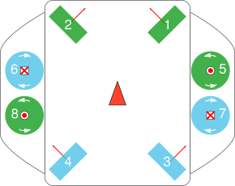

The Vehicle¶
The underwater vehicle we use in class is called BlueROV2. It has eight thrusters, mounted in a way that allows to actuate all six degrees of freedom (3 translatory and 3 rotational). You can visit the Blue Robotics website to get a detailed description of the vehicle.
The vehicles’s coordinate frame follows the ROS conventions, i.e. x-axis points forward, y-axis left, z-axis up.
Four of the eight thrusters have their axis in parallel to the horizontal (x-y) plane. The other four are in parallel to the vehicle’s z-axis.
In the following schematic, green thrusters have counterclockwise propellers, blue ones have clockwise propellers.
The red arrows indicate the direction of thrust if the thrusters receive positive setpoints. The red triangle points in the forward direction of the vehicle.
All motors are turning in counterclockwise direction for positive setpoints.
For more information on the BlueROV visit BlueRobotics website. Our BlueROV2 is in the heavy configuration, which means, instead of only two vertical thrusters we have four.
If you are interested in the characteristics of the thrusters, also visit the BlueRobotics website. There are performance charts available.
Note
The ESC PWM values in the charts are normalized to motor commands in range [-1..1].